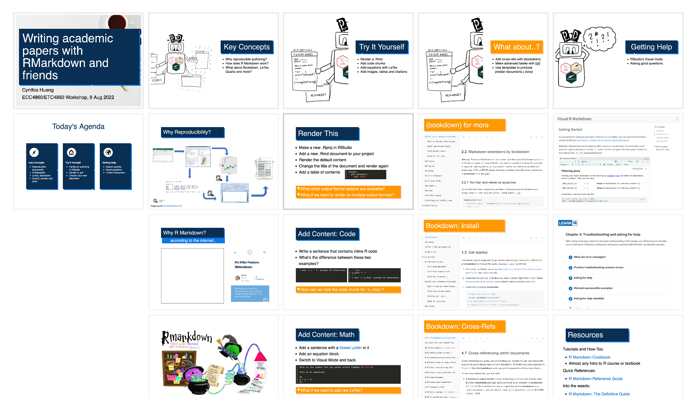
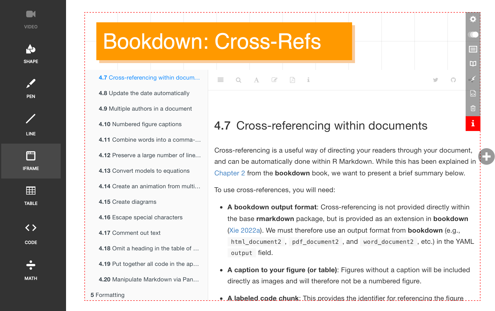

![A robot with four arms, no legs, three hex-stickers on its rectangular chest, and the pandoc logo on its two antennae. At the end of the top left arm it is holding a rectangular document with the title"ESSAY.RMD" and some example content. Underneath in the bottom left arm it is holding a folder with the label "Resources" on it. On the right side, its top right arm has "LATEX" written on it and is holding a document with the title "ESSAY.PDF". Underneath in its bottom right arm it holds a blank document. Both documents on the right have squiggles and squares in them to show content. The hex-stickers on its chest are for knitr, bookdown and rmarkdown.](images/publishing-robot-cynthiahqy.png)
I recently taught a short 2-hour hybrid workshop on R Markdown. Rather than deliver a standard “open RStudio and knit a new document” walk-through, I wanted to orientate students in the vast landscape of markdown based publishing tools, using R Markdown as a starting point. I tried to balance confidence building “try-it-yourself” style exercises with the excitement of exploring more advanced features. I also gave myself just one day1 to prepare for the workshop and experiment with HTML slides. In the spirit of “learning in public” and for the benefit of future me, I thought I’d share some reflections.
Key Takeaways
Provide context and motivation
Explain how R markdown relates to their existing publishing workflow
Give students a metaphor for what’s happening “under the hood”
Flatten the learning curve
Focus on demonstrating a small set of functionality that provide immediate value
Leverage R Studio’s visual mode as an alternative route for learning markdown syntax
Give students the tools to navigate the ecosystem of R Markdown extensions and documentation
Encourage extension questions
Ask for specific questions about what R Markdown can add to their existing workflow – e.g. “I use STATA, could I ….?”
Use a contrasting colour to highlight material that extends on workshop activities but can’t be covered or demonstrated in depth.
Reduce, reuse, recycle
Use
iframesto leverage existing R Markdown learning resources and documentation.Search for and borrow open use images and diagrams!
Use Slides.com to quickly experiment with HTML slide functionality without needing to learn
reveal.js
Workshop Design
Audience
The workshop was for this year’s honours in economics cohort, roughly 13 or so students. Almost none of the students used R in their research, with STATA or Python being most common.
Objectives
At the end of the workshop I wanted students to:
- have a conceptual understanding of the ecosystem of reproducible publishing tools under the R Markdown authoring framework
- be able to render an .Rmd file into .pdf and .docx output
- be able to add code chunks, math equations, tables, images and citations to a .Rmd document
- have some ideas for using and extending the demonstrated functionality in their own publishing workflow
- know where to go for further information and troubleshooting
Lesson Plan
| Time | Activity | Duration |
|---|---|---|
| 0:00-0:30 | Key Concepts, a short lecture | 30 mins |
| 0:30-1:30 | Try it Yourself, hands-on walk-through | 60 mins |
| 1:30-1:45 | What About…?, direct interaction and troubleshooting with students | 15 mins |
| 1:45-2:00 | Getting Help, workshop wrap-up and further resources | 15 mins |
Prerequisites
Students were asked to install R, RStudio, and {tinytex} before the workshop using instructions from R Markdown: The Definitive Guide.
Resources
Students were linked to the slides during the workshop, but no other resources were provided.
Workshop Recap

Key Concepts
After introducing myself and giving a high-level overview of the workshop structure, I spent about 30 minutes explaining:
- Benefits of a reproducible publishing workflow, using the specific example of eliminating the dreaded “copy-paste” updating cycle.
- Why R Markdown is a great starting point for building a reproducible publishing workflow. Rather than enumerate the many benefits, I directed them to the many “Why use R-Markdown” articles that have already been written, and emphasised the abundance of resources available.
- R Markdown as an authoring framework, your friendly magical publishing wizards (c/o Allison Horst), and/or your multi-talented publishing robot (c/o yours truly).
- The basic anatomy of an .Rmd file, and what’s happening under the hood.
- a brief what and why of Quarto. I used the visual image and conceptual metaphor of a publishing robot to link R Markdown and Quarto, but also used a different colour, orange rather than blue, for the slide title to highlight it was just an FYI.
Try it Yourself
The next hour was spent doing a hands-on walk-through of basic R Markdown functionality. Students were expected to follow along on their own computers while I live-coded on the big screen. However, in practice, I find students generally progress at different speeds.
To try and cater for different needs, the walk-through was a mixture of pre-planned exercises, extension links and improvised demo based on student requests. The pre-planned activities were ones that I explicitly wrote instructions for on the slides. The basic learning loop was:
- Do this
- Render
- Observe what happened
- Do something else
- Render
- Observe and compare
- Repeat from 1.
For each pre-planned exercise, I also provided an extension activity in the form of a call-out box at the bottom of each slide. The call-out box was coloured orange, contained a “how can we do …?” style question and linked to a resource that answered the question. For example, the call-out in the slide below linked to section 5.4 Control the size of plots/images in the R Markdown Cookbook.
At the start of this activity, I explained the purpose of the extension call-outs, and reiterated that I would not be directly demonstrating any “orange content” in the walk-through.
I used a few different criteria and framings to choose and sequence the pre-planned and extension activities including:
- What kinds of documents are the students trying to write?
- What will be the most useful building block features for them to takeaway from the workshop?
- What features are least prone to bugs that might derail the momentum of the workshop?
- What are some logical extensions of the features shown in the workshop?
- Show and reinforce the “render > edit > render” loop within minimal waiting time.
- Show both source code and visual modes, but don’t switch back and forth too much to avoid losing students.
What About…?
Once I had finished the walk-through, I gave students a mini-break / troubleshooting session. This was mostly just me floating around and checking in with each table. After helping a few students troubleshoot some minor issues2, I brought the class back together and introduce them to some more advanced R Markdown functionality. I tried to pick examples that highlighted different ways in which the authoring framework could be extended or customised:
- cross-references using
{bookdown}as an example of the “install package, get more markdown features” add-on ecosystem. - pretty tables using
{gt}as an example of extra features that require explicitly coding in R. - Microsoft Word chapter from the R Markdown cookbook for more fine-tuned control of output formats.
Again, all of these slides used orange titles to signal that the content was related to, but outside the scope of the workshop.
Getting Help
Finally, I provided a quick recap of what we covered, and provided some tips for keeping up the momentum from the workshop:
- Try R Studio Visual mode before looking up markdown syntax. I included the R Studio Visual R Markdown documentation as an
iframe. - Read this wonderful guide on troubleshooting written by the LearnR team. Again, I directly included the LearnR Troubleshooting and asking for help webpage as an
iframe, and specifically drew their attention to “Section 3: Asking for Help”. - Understand the different kinds of R Markdown learning resources available. I used an adaptation of the Diataxis framework by Daniele Procida to curate a short list of useful links. I also tried limit myself to these resources when providing answers for the earlier extension call-outs.
Workshop Reflections

iframes and hyperlinks
The best part of this workshop opportunity was getting to play with HTML slides. I think the workshop slides are a fun proof of concept for slides as a dynamic map and portal to existing (polished) learning resources, rather just delivering static “original” lesson content. iframes allow you to directly interact with the linked webpage from the slide without opening a new tab. This meant I could:
- directly incorporate high quality learning resources,
- free up time for designing learning activities instead of writing content, and
- introduce students to content in the exact format they would be referencing on their own after the workshop.
The downside of using iframes and hyperlinks is that it makes the slide deck rather “fragile” since links could break or get moved. I tried to mitigate this risk somewhat by:
- making copies of any images that I used, and only using hyperlinks in the source attribution labels
- limiting the number of source websites I linked to - i.e. prioritising more “stable” or prominent sources like the R Markdown Cookbook, or the Knitr package website, and avoiding personal blogs or social media posts.
- writing specific questions in the extension call-outs instead of a using generic “Try this!” call-out so that even if the link breaks, students can just Google the question.
If I could do it again, I’d probably include an appendix slide listing all the iframe sources so they could be easily searched for if the links break. In any case, updating iframe links is still easier than updating static slide content so I’m going to keep experimenting with them in my teaching.
Slides.com and HTML slides
I have a whole other blog post lined up about my many attempts to break up with Microsoft PowerPoint and go all in with plain-text. Unfortunately, I usually give up after two slides because markdown slides never look how I want them to, but I really do want to stop accumulating piles of final.pptx, final_final.pptx, and final_v4_after_edits.pptx files. Long story short, it’s happening, slowly but surely — and with a combination of Quarto and reveal.js.
For this post, I only wanted to say that Slides.com is a great way to try out HTML slide functionality, without have to go down the very deep rabbit hole of learning reveal.js, figuring out how Quarto markdown interacts with reveal.js, and how to port all the different PowerPoint features I use into plain-text. I used an out-of-the-box template and managed to get pretty much everything I wanted to work. I did however have a minor hiccup during the workshop with the two different sharing modes. Initially, I linked students to the “Present Live” URL. However, this mode only shows the slide you are currently presenting, which meant students couldn’t go ahead or backtrack in the Try-it-Yourself exercises. What I had actually wanted to do was link students to the slide deck. It was a relative easy fix, but did disrupt the flow of the workshop slightly.
Summary
This workshop was the first time I have had full control over lesson content, design and delivery. Prior to starting my PhD, I worked for a few years as a casual tutor (amongst other things). I must have delivered hundreds of economics, econometrics and business statistics tutorials by now, but always using someone else’s content, never my own. Although it was only a small group of about 10 students3, I’m really grateful I got the opportunity to write my very first set of teaching materials and deliver this workshop.
Hopefully, some of these ideas are useful for someone else.
Here are the slides:
Footnotes
I ended up spending about 1.5 days on preparation, so I was close…↩︎
e.g. quotation marks instead of back ticks; migrating citation from an overleaf .bib file; image path issues etc.↩︎
Informally the feedback was really positive and, aside from some technical difficulties with the hybrid set-up, everything went pretty much exactly as planned. I even finished 10mins before the room booking was up, giving me enough time to pack up and vacate before the next class!↩︎